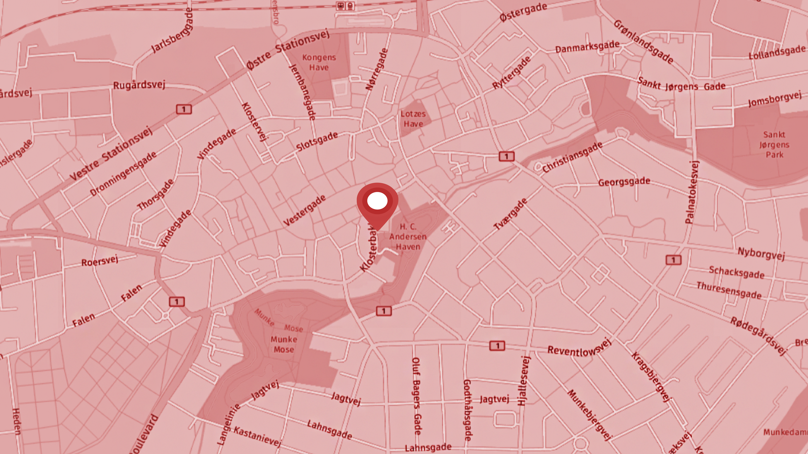
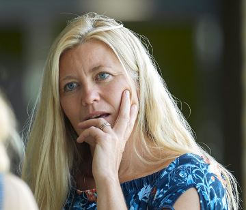

Kroppens Dag
Om begivenheden
Kroppens dag er et heldagsarrangement, hvor der sættes fokus på kroppen.
Tidsidealet om den perfekte krop, og hvad den gør ved os, bliver belyst og debatteret gennem hele dagen.
Der vil være workshops, og debat paneler, kunst og musik, åben mikrofon og studerende der kan bidrage fra deres faglige vinkler.

Tid og sted
Dato
5. april 2019
Tidspunkt
Kl. 10:00-17:00
Sted
Adresse: Klosterbakken 2, Odense Domkirke
Få RutevejledningPraktisk Info
Alle kan deltage.
Entré: Gratis
For undervisere med klassehold skriv til arrangøren kra@km.dk ved tilmelding af klassehold på mere end 10 deltagere.
Der er plads til 500 personer i kirken ad gangen.
Kl. 10.00 Åbning og velkomst v./Studenterpræst Kristine Hansen. |
|
Kl.10.15 Foredrag/oplæg ved Søren Østergaard Center for Ungdomsforskning. |
|
Kl.11.00 Debatpanelet med: Søren Østergaard, Sofie Warbjerg Hækkerup Mikkel Salling Holmgaard fra Strongmind, en studerende og underviser fra UCL. |
|
Kl.12.00 Bevægelse i kroppen dagens sang med Janne Wind. |
|
Kl.12.10 Smagsprøver ved studerende fra Kold Collage. |
|
Kl.12.30 Sang og undervisning om stemmen v. Janne Wind. |
|
Kl.13.00-14-30 Oplæg om kroppen om, kost, bevægelse, hvad sker der i kroppen. |
|
Kl.14.30 Pause og "besøg" i stationerne i kirkerummet (stationer:Tanker til tørre,Filosofiske smuglere og andet godtfolk, Fotokunst, Chilli out i Krypten, Store tanker i små sko, Mad med glæde) |
|
 |
Kl.15.15 danseforstilling(Ved dansere fra Odense) |
Kl.16.00 Sangworkshop v./Janne Wind. |
|
Kl.16.30-17.00 Glædes koncert med de sange vi har lært på 30 min. |
|
Kl.17.00 Afslutning og Tak for timer sammen. |
Kontakt Arrangør
Kirstine Hansen
Studenterpræst på UCL
UCL, Niels Bohrs Allé 1, 5230 Odense M
Telefon: 51 44 04 07